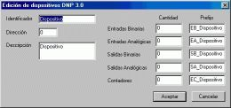
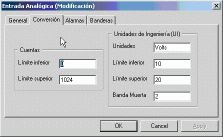

CommSet
CommSet es un equipo de pruebas o simulador para los sistemas de adquisición de datos y control supervisorio. Se utiliza para probar tanto los protocolos como los equipos de control en ambos extremos del canal de comunicaciones.
CommSet es un producto desarrollado totalmente en México, es un producto vivo al que continuamente se le están agregando nuevas funciones y protocolos de acuerdo con las sugerencias y necesidades de los usuarios.
Modos de operación
CommSet puede operar en tres modos diferentes: maestra, remota y monitor.
En el modo maestra opera de manera similar a una Estación Maestra en un sistema de control supervisorio, es decir, envía comandos a otro equipo e interpreta las respuestas.
En el modo remota opera de manera similar a una Unidad Terminal Remota, es decir, recibe comandos y contesta con la información requerida.
En el modo monitor analiza la información de las comunicaciones entre una Estación Maestra y una o varias Unidades Terminales Remotas.
Protocolos
CommSet puede manejar varios protocolos de comunicaciones entre los cuales podemos mencionar los siguientes:
- DNP 3.0
- Harris 5000
- Modbus
- Weston
- Data 2179
Navegación
En CommSet se pueden tener abiertas una gran cantidad de ventanas de manera simutánea, todas presentando información en tiempo real. Para facilitar la navegación hemos intentado minimizar el uso del menú concentrando toda la administración de la interfaz de usuario en la ventana de configuración.
Presionando los botones del mouse sobre cualquiera de los íconos que se presentan en esta ventana se tiene acceso a las diferentes funciones del sistema.
Edición de mensajes
Cuando CommSet se está usando en modo maestra es necesario crear los mensajes que se quieren enviar. Este proceso es muy sencillo ya que el usuario solamente tiene que escoger las diferentes opciones del comando de manera amigable y CommSet se encarga de crear el mensaje equivalente en formato hexadecimal. El usuario no tiene que ser un experto en el protocolo de comunicaciones para poder configurar los mensajes correctamente.
Al editar un mensaje CommSet presenta al usuario las funciones permitidas según el protocolo de comunicaciones que se está usando.

Si el mensaje requiere más información, como el tipo de puntos a manejar o el modo de direccionamiento, CommSet presenta los valores permitidos de acuerdo con el código de función.

Todos los mensajes configurados aparecen en una ventana. Para enviar un mensaje solo es necesario seleccionarlo y presionar el botón “Enviar”. Es posible enviar también uno o todos los mensajes automáticamente de acuerdo con los tiempos configurados para cada uno de ellos.
Histórico de mensajes
Cada mensaje que se envía o recibe se presenta en tiempo real en el histórico de mensajes. Es posible detener la captura de los mensajes así como consultar los mensajes que se recibieron con anterioridad. También se pueden almacenar los mensajes en un archivo para consultarlos posteriormente. Si se selecciona la opción de ver el detalle de cada mensaje, además de aparecer en formato hexadecimal se presenta de manera interpretada para que el usuario pueda conocer fácilmente su contenido.
El histórico permite consultar los mensajes que se envían y reciben presentando para cada uno la hora y el sentido.
Si es necesario se puede observar el contenido de los mensajes de manera amigable.
Edición de dispositivos
La mayoría de los equipos de pruebas solamente manejan la información desde el punto de vista del protocolo de comunicaciones. Esto es útil cuando se quieren resolver problemas de comunicaciones, sin embargo es muy difícil utilizarlos para resolver problemas relativos a los valores de las entradas y salidas de un dispositivo.
CommSet puede manejar la información desde el punto de vista de los dispositivos y los puntos que contienen. De esta manera es posible visualizar y editar el valor de cualquier punto sin tener que conocer el protocolo de comunicaciones. Además es posible ver la información en el formato y unidades de ingeniería que se requiera.

En modo maestra y en modo monitor, cuando se recibe un mensaje CommSet se encargará automáticamente de actualizar los valores de los puntos de acuerdo con el contenido del mensaje.
En modo remota, CommSet se encarga de contestar a los mensajes recibidos de acuerdo con los valores de los puntos asignados por el usuario.
Los valores de los puntos se muestran en una ventana diferente para cada tipo de punto.
Además de los valores de los puntos de entrada y salida, CommSet tiene la capacidad de manejar colas de eventos.
Para cada uno de los puntos es posible configurar el identificador, la descripción y si genera alarmas y eventos.
Para los puntos binarios es posible especificar la leyenda que debe aparecer para cada uno de los dos estados posibles.
Para los puntos analógicos el usuario puede configurar la conversión a unidades de ingeniería…

… así como los niveles de alarma.
Si requiere más información por favor utilice alguna de nuestras formas de contacto